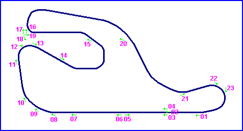

Oregon International Raceway, Goshen, Oregon, United States
| Type: | Permanent Road Course | |
| Length: | 2.800 Miles / 4.506 km | |
| Used: | Jul. 1964 to 1966 | |
| Photos Taken: | August 2003 |
Oregon International Raceway was located one and a half miles to the south of Goshen on the east side of Interstate 5, at the Peebles Road overpass. Designed by John Hugenholtz, the circuit opened on the 4th June 1964, but later flooded due to it's proximity to the Willamette River. This damaged the track surface and funds could not be raised to carry out the necessary repairs. Consequently, the circuit closed just two years after first opening.
The Short Mountain Landfill facility was established on the site in 1976, incorporating some of the existing circuit roads. Over time, much of the course was buried or dug over, however traces of the original circuit layout are still visible on recent aerial aerial photos. The Lane County Oregon website also has a slide show of the Short Mountain landfill site.
Presented here is a tour of the remains of the circuit, however due to the numerous alterations on the ground that have taken place over the years, it is difficult in some areas to ascertain the precise route of the course.
|| Contents || Front Stretch | Turns 1, 2 & Infield Loop | Backstretch and Final Corners || Home ||

Numbers on the map represent the location where the photographs were taken. Scroll
down to view the photographs.
Return to racingcircuits.net's Photo Archive Main Index
Photographs supllied supplied by Brian Parker. Reproduced here with kind permission.